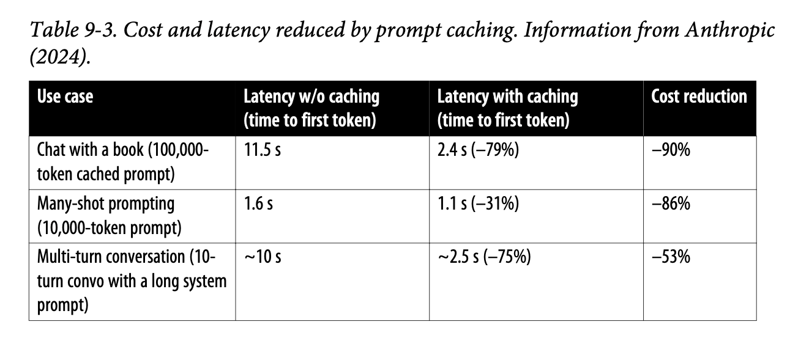

What follows are my notes on chapter 9 of Chip Huyen’s ‘AI Engineering’ book. This chapter was on optimising your inference and I learned a lot while reading it! There are interesting techniques like prompt caching and architectural considerations that I was vaguely aware of but hadn’t fully appreciated how they might work in real inference systems.
Chapter 9: Overview
Machine learning inference optimization operates across three fundamental domains: model optimization, hardware optimization, and service optimization. While hardware optimization often requires significant investment and may offer limited individual leverage, model and service optimizations provide substantial opportunities for AI engineers to improve performance.
Critical Cost Insight: A 2023 survey revealed that inference can account for up to 90% of machine learning costs in deployed AI systems, often exceeding training costs. This emphasizes why inference optimization isn’t just an engineering challenge - it’s a critical business necessity.
Core Concepts and Bottlenecks
Understanding inference bottlenecks is essential for effective optimization. Two primary types of computational bottlenecks impact inference performance:
Compute-Bound Bottlenecks: Tasks that are limited by raw computational capacity, typically involving complex mathematical operations that take significant time to complete. These bottlenecks are particularly evident in computationally intensive operations within neural networks.
Memory Bandwidth-Bound Bottlenecks: Limitations arising from data transfer requirements between system components, particularly between memory and processors. This becomes especially relevant in Large Language Models where significant amounts of data need to be moved between different memory hierarchies.
In Large Language Models (LLMs), different operations exhibit varying profiles of these bottlenecks. This understanding has led to architectural decisions such as decoupling the prefilling step from the decode step in production environments - a practice that has become increasingly common as organizations optimize their inference pipelines.
Inference APIs and Service Patterns
Two fundamental approaches to inference deployment exist:
- Online Inference APIs
- Optimized for minimal latency
- Designed for real-time responses
- Typically more expensive per inference
- Critical for interactive applications
- Batch Inference APIs
- Optimized for cost efficiency
- Can tolerate longer processing times (potentially hours)
- Allows providers to optimize resource utilization
- Ideal for bulk processing tasks
Inference Performance Metrics
Several key metrics help quantify inference performance:
Latency Components
- Time to First Token
- Measures duration between query submission and initial response
- Critical for user experience in interactive applications
- Often a key optimization target for real-time systems
- Time per Output Token
- Generation speed after the first token
- Impacts overall completion time
- Can vary based on model architecture and optimization
- Inter-token Latency
- Time intervals between consecutive tokens
- Affects perceived smoothness of generation
- Important for streaming applications
Total latency can be expressed as: time_to_first_token + (time_per_token × number_of_tokens)
Throughput and Goodput Metrics
Throughput: The number of output tokens per second an inference service can generate across all users and requests. This raw metric provides insight into system capacity.
Goodput: The number of requests per second that successfully meet the Service Level Objective (SLO). This metric offers a more realistic view of useful system capacity.
Resource Utilization Metrics
- Model FLOPS Utilization (MFU)
- Ratio of actual to theoretical FLOPS
- Indicates computational efficiency
- Key metric for hardware optimization
- Model Bandwidth Utilization (MBU)
- Percentage of achievable memory bandwidth utilized
- Critical for memory-intensive operations
- Helps identify memory bottlenecks
Hardware Considerations and AI Accelerators
While NVIDIA GPUs dominate the market, various specialized chips exist for inference:
Popular AI Accelerators
- NVIDIA GPUs (market leader)
- AMD accelerators
- Google TPUs
- Various emerging specialized chips
Inference vs Training Hardware: Inference-optimized chips prioritize lower precision and faster memory access over large memory capacity, contrasting with training-focused hardware that requires substantial memory capacity.
Key hardware optimization considerations include:
- Memory size and bandwidth requirements
- Chip architecture specifics
- Power consumption profiles
- Physical chip architecture variations
- Cost-performance ratios
Model Optimization Techniques
Core Approaches
- Quantization
- Reduces numerical precision (e.g., 32-bit to 16-bit)
- Decreases memory footprint
- Weight-only quantization is particularly common
- Can halve model size with minimal performance impact
- Pruning
- Removes non-essential parameters
- Preserves core model behavior
- Multiple techniques available
- Requires careful validation
- Distillation
- Creates smaller, more efficient models
- Maintains key capabilities
- Covered extensively in Chapter 8
Advanced Decoding Strategies
Speculative Decoding
This approach combines a large model with a smaller, faster model:
- Small model generates rapid initial outputs
- Large model verifies and corrects as needed
- Provides faster token generation
- Easy to implement
- Integrated into frameworks like VLLM and LamaCPU
Inference with Reference
- Performs mini-RAG operations during decoding
- Retrieves relevant context from input query
- Requires additional memory overhead
- Useful for maintaining context accuracy
Parallel Decoding
Rather than strictly sequential token generation, this method:
- Generates multiple tokens simultaneously
- Uses resolution mechanisms to maintain coherence
- Implements look-ahead techniques
- Algorithmically complex but offers significant speed benefits
- Demonstrated success with look-ahead decoding method
Attention Optimization
Several strategies exist for optimizing attention mechanisms:
- Key-Value Cache Optimization
- Critical for large context windows
- Requires substantial memory
- Various techniques for size reduction
- Specialized Attention Kernels
- Flash Attention as leading example
- Hardware-specific implementations
- Flash Attention 3 for H100 GPUs

Service-Level Optimization
Batching Strategies
- Static Batching
- Processes fixed-size batches
- Waits for complete batch (e.g., 100 requests)
- Simple but potentially inefficient
- Dynamic Batching
- Uses time windows for batch formation
- Processes incomplete batches after timeout
- Balances latency and throughput
- Continuous Batching
- Returns completed responses immediately
- Dynamically manages resource utilization
- Similar to a bus route that continuously picks up new passengers
- Optimizes occupation rate
- Based on Orca paper’s findings
Prefill-Decode Decoupling
- Separates prefill and decode operations
- Essential for large-scale inference providers
- Allows optimal resource allocation
- Improves overall system efficiency
Prompt Caching

- Stores computations for overlapping text segments
- Offered by providers like Gemini and Anthropic
- May incur storage costs
- Requires careful cost-benefit analysis
- Must be explicitly enabled
Parallelism Strategies
- Replica Parallelism
- Creates multiple copies of the model
- Distributes requests across replicas
- Simplest form of parallelism
- Tensor Parallelism
- Splits individual tensors across devices
- Enables processing of larger models
- Requires careful coordination
- Pipeline Parallelism
- Divides model computation into stages
- Assigns stages to different devices
- Optimizes resource utilization
- Reduces memory requirements
- Context Parallelism
- Processes different parts of input context in parallel
- Particularly useful for long sequences
- Can significantly reduce latency
- Sequence Parallelism
- Processes multiple sequences simultaneously
- Leverages hardware-specific features
- Requires careful implementation
Implementation Considerations
When implementing inference optimizations:
- Multiple optimization techniques are typically combined in production
- Hardware-specific optimizations require careful testing
- Service-level optimizations often provide significant gains with minimal model modifications
- Optimization choices depend heavily on specific use cases and requirements